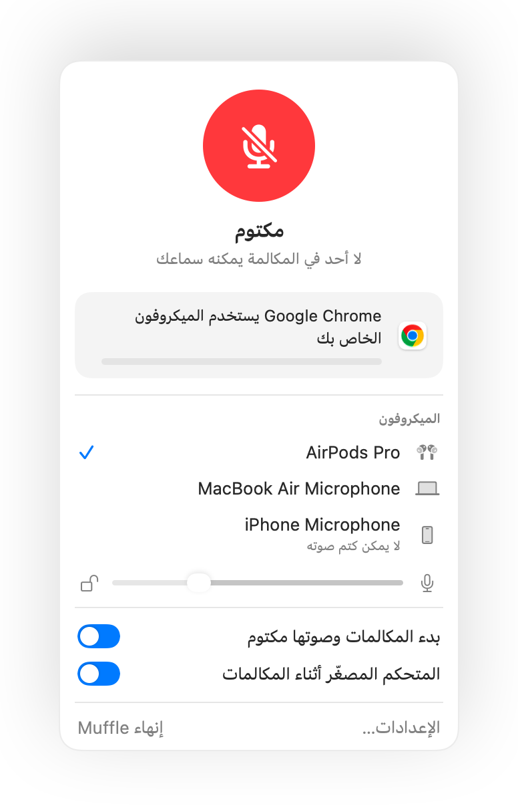

كتم الصوت في AirPods لا يعمل على Mac؟ إليك الحل
يتيح لك macOS كتم صوت المكالمة بالضغط على ساق AirPods، ولكن فقط إذا كان تطبيق المكالمة يدعم ذلك. هناك العديد من التطبيقات التي لا تدعمه، بما في ذلك Chrome ومكالمات الويب داخله. تضغط، فتسمع نغمة خطأ قصيرة، وتظهر رسالة «Cannot Control Mic»، ويستمر الطرف الآخر في سماع صوتك.
يضيف Muffle هذا الدعم إلى كل تطبيق. فهو يستقبل الضغطة، ويكتم صوت ميكروفون Mac، ويشغّل نغمة كتم الصوت المعتادة.
جرّب Muffle مجانًا لمدة 3 أيامقريبًا على Mac App Store
تفعيل كتم الصوت بضغطة AirPods في أي تطبيق
- ثبّت Muffle واسمح بالوصول إلى الميكروفون. يرسل macOS الضغطة فقط إلى التطبيقات المصرح لها باستخدام الميكروفون.
- تأكد من تفعيل خيار «كتم الصوت وإلغاء كتمه بالضغط على AirPods» في إعدادات Muffle.
- انضم إلى مكالمة. لا تعمل الضغطة لكتم الصوت إلا عندما يكون هناك تطبيق يستخدم الميكروفون.
- اضغط على الساق مرة واحدة لكتم الصوت واضغط مرة أخرى لإلغاء الكتم.

- خارج المكالمات، تستمر الضغطة في تشغيل الموسيقى وإيقافها مؤقتًا كالمعتاد.
- إذا كانت AirPods تستخدم ضغطة مختلفة لعناصر التحكم في المكالمات، فتحقق من إعدادات AirPods في إعدادات النظام.
الأسئلة الشائعة
لماذا يصدر Mac صوت خطأ عندما أضغط على AirPods؟
التطبيق الذي تجري المكالمة من خلاله لا يدعم ضغطة كتم الصوت في AirPods، لذا يرفضها macOS. عند تشغيل Muffle، تكتم الضغطة صوت الميكروفون بدلاً من ذلك.
ما طرازات AirPods التي تدعم ضغطة كتم الصوت؟
طرازات AirPods Pro، وAirPods 3 والإصدارات الأحدث، وAirPods Max، بالإضافة إلى طرازات Beats المزودة بعناصر تحكم في المكالمات.